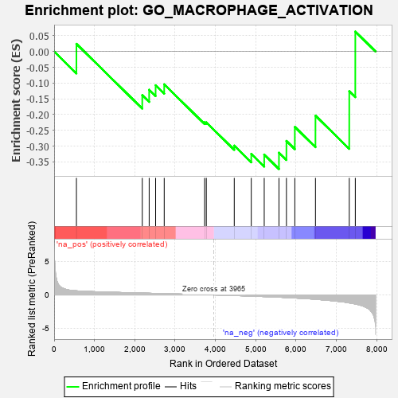

| | | Dataset | 7d |
| Phenotype | NoPhenotypeAvailable |
| Upregulated in class | na_neg |
| GeneSet | GO_MACROPHAGE_ACTIVATION |
| Enrichment Score (ES) | -0.37249032 |
| Normalized Enrichment Score (NES) | -0.899486 |
| Nominal p-value | 0.60141844 |
| FDR q-value | 0.9524171 |
| FWER p-Value | 1.0 |
Table: GSEA Results Summary

Fig 1: Enrichment plot: GO_MACROPHAGE_ACTIVATION
Profile of the Running ES Score & Positions of GeneSet Members on the Rank Ordered List
| PROBE | GENE SYMBOL | GENE_TITLE | RANK IN GENE LIST | RANK METRIC SCORE | RUNNING ES | CORE ENRICHMENT | | 1 | JMJD6 | | | 553 | 0.613 | 0.0241 | No |
| 2 | SYK | | | 2186 | 0.278 | -0.1385 | No |
| 3 | MIF | | | 2357 | 0.252 | -0.1213 | No |
| 4 | TLR1 | | | 2517 | 0.224 | -0.1070 | No |
| 5 | RORA | | | 2730 | 0.193 | -0.1041 | No |
| 6 | SYT11 | | | 3732 | 0.036 | -0.2243 | No |
| 7 | SBNO2 | | | 3774 | 0.032 | -0.2246 | No |
| 8 | LRRK2 | | | 4467 | -0.087 | -0.2982 | No |
| 9 | CLU | | | 4889 | -0.174 | -0.3245 | No |
| 10 | ATM | | | 5210 | -0.249 | -0.3266 | Yes |
| 11 | SPHK1 | | | 5576 | -0.339 | -0.3207 | Yes |
| 12 | TLR2 | | | 5761 | -0.395 | -0.2834 | Yes |
| 13 | TTBK1 | | | 5969 | -0.460 | -0.2390 | Yes |
| 14 | DYSF | | | 6481 | -0.654 | -0.2033 | Yes |
| 15 | GRN | | | 7319 | -1.194 | -0.1260 | Yes |
| 16 | SHPK | | | 7469 | -1.360 | 0.0631 | Yes |
Table: GSEA details [plain text format]
 Fig 2: GO_MACROPHAGE_ACTIVATION: Random ES distribution
Fig 2: GO_MACROPHAGE_ACTIVATION: Random ES distribution
Gene set null distribution of ES for GO_MACROPHAGE_ACTIVATION